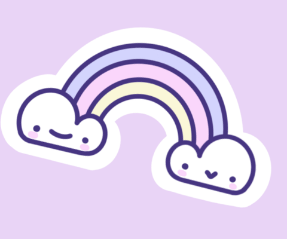

Stress during internships is more common than people talk about. It can affect focus, motivation, and mental health. But stress is not always harmful when understood and managed, it can also drive personal growth and resilience.
I surveyed 156 interns from Gedu College of Business Studies, gathering data on their stress levels, causes, coping strategies, and outcomes. Over half reported feeling stressed, yet most also reported personal growth through the experience.
This website is the result of turning lived experience into practical support. It offers a mood tracking calendar, calming videos, breathing exercises, fun games, and a virtual friend to talk to. Stress does not discriminate this space is for anyone who needs a moment to pause, reset, and feel a little less alone.
a safe virtual zone for everyone
InternWellness is a gentle space created initially for interns but stress does not discriminate. Whether you're overwhelmed, burnt out, or simply need a pause, you are always welcome here.
Game Zone
Sometimes a few minutes' break is all you need. Check out the fun activities brought to you by the wellness team.
More fun activities →Fictional Story
A story about an experience from excitement to stress, and how she learns to cope and grow.
Watch video →Whenever stress starts to build up, don't keep it to yourself. The people who care about you want to be there for you.
Pause, breathe, and turn to prayer. In silence, you may find clarity and strength. Let peace slowly find its way to you.
You are in a learning process and that is completely okay. Every experience, good or bad, is teaching you something valuable.
Pause and give yourself rest. Step away, stretch, sip something warm and breathe slowly. Small breaks make a big difference.
— End of page —
In my survey of 156 GCBS interns, 53% reported feeling stressed during their internship and one of the challenges was not having clear ways to manage it. Tell us your mood and we'll suggest something to help you feel better.
🎮 A game or activity suggestion awaits!
Track your mood daily and look back anytime 📅
View CalendarBrowse tools for your mind and mood.
In my survey, interns' most common coping strategies were calling family and friends, physical exercise, and seeking advice. The top stressor was time management (41.98%), followed by tasks not aligning with studies. These resources are designed to fill that gap.
Tools & Exercises
Try this quick and effective technique to calm your mind instantly.
▶ Watch NowFun & Relaxing Activities
Games sourced from Hongkiat and mindyourmind.
Based on survey responses from 156 third-year interns out of 349 from Gedu College of Business Studies.
💡 Best viewed on a laptop.
Reaching out takes courage. Whether it's a phone call, an email, or just reading these words, you are already taking a step forward.
tap to pause / resume
For immediate help in a crisis or emergency. Available 24 hours, every day.
Call Now 📞 Call 1010 from your phoneDedicated mental health helpline. Speak with a trained counsellor anytime.
Call Now 📞 Call 1098 from your phoneWrite to the PEMA helpline for non-urgent support and gentle guidance.
Send EmailBrowse mental health resources, guides and support services online.
Visit PEMA💡 Tip: tell me if you prefer short or detailed responses!
🔒 Your messages are not stored or shared.